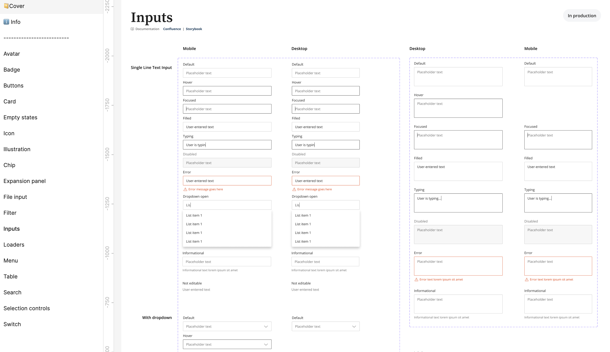
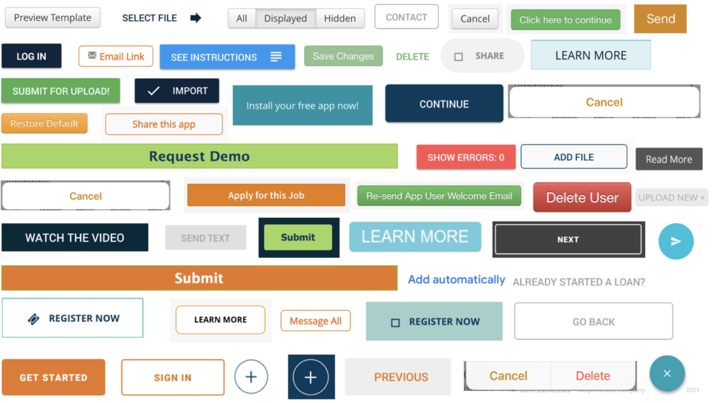
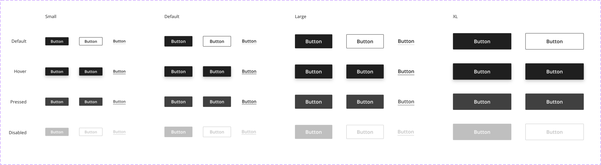
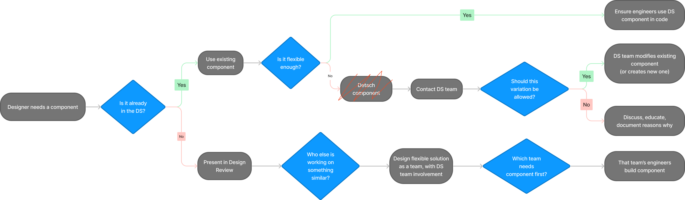
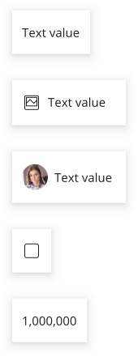
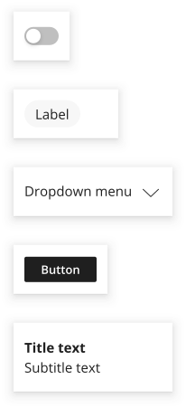
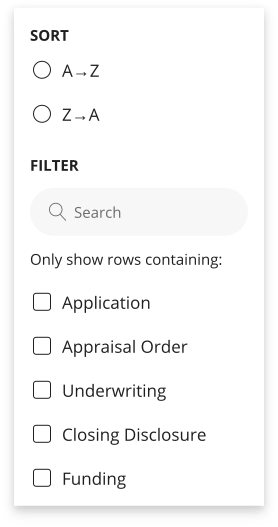
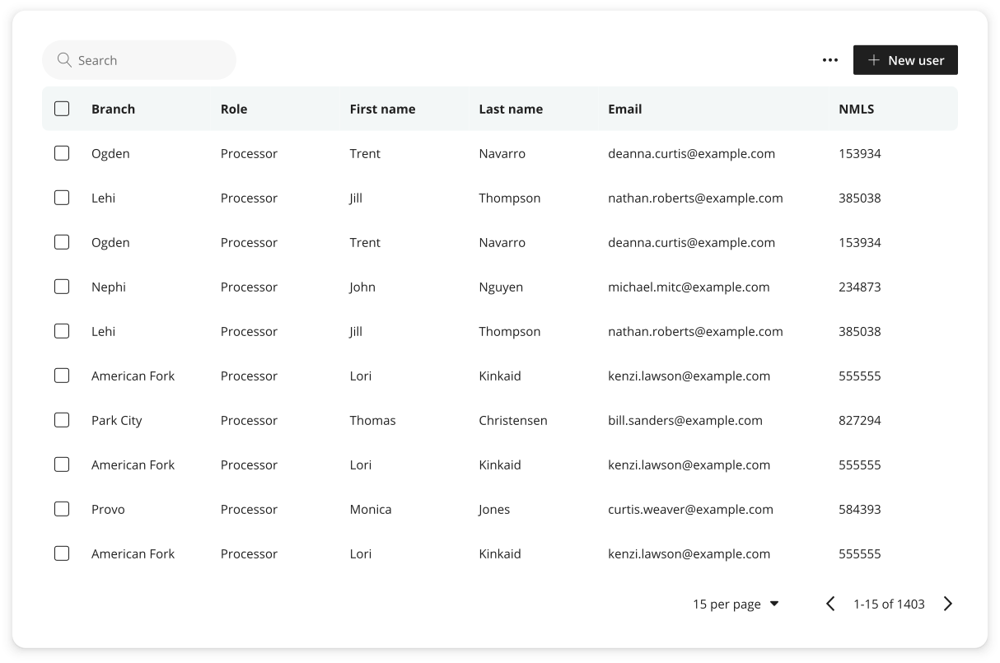

Building a design system from scratch
Developed over 18 months, for a fintech startup with 14 designers and 300+ employees

Screenshot showing the Inputs page of the Core Components file of SimpleNexus' design system.
CONTEXT
No design system when I arrived
I was designer #4 on a team that grew to 14 over the course of 18 months.
The company, SimpleNexus, created white-labeled mortgage application software for small- and medium-size lenders.
Lead architect for Figma components
I worked alongside our 2 visual design leads, who focused on foundational elements (fonts, colors, icons, etc).
Developed process for new component adoption
Without a dedicated engineering team, I was in charge of coordinating and leveraging efforts across product teams to turn Figma components into code.
before

After

Process for new component adoption

Step 1: Take inventory of existing patterns
to be sure all use cases are taken into account
BEFORE
Step 2: Assimilate disparate UI patterns
Accomodating all use cases with minimal complexity
AFTER




Step 3: Build functional, flexible components in Figma
Built to be flexible within the agreed-upon guidelines
Lessons learned
Context vs Consistency
Need a healthy tension between the two.
Need good reasons to break consistency in favor of variation for a "unique" context.
Empower engineers
They help catch rogue designs if they feel they can push back on designers.
Educate designers
When designers understand componentization and concepts like and Don't Repeat Yourself, a new design system has better chance of success.
Use standard atoms
UI kits like Material and Bootstrap have consistent size relationships.
Changing a button or font's height impacts how it fits with other elements and requires you to manage additional complexity for minimal gain.